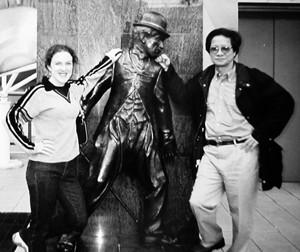

“Tập này mà in thì cậu không về nước được! Về nước thì không bao giờ có chuyện in. Chưa có thằng nào qua đây in sách kiểu này mà dám vác mặt về nước.”
☆
Tôi nhớ Trần Văn Thủy có một bức thư ngỏ đăng trên các trang mạng của Nguyễn Huệ Chi, của Nguyễn Trọng Tạo và của Trần Nhương trao đổi xung quanh những cáo buộc của một số người Việt ở Hoa Kỳ đối với cuốn “Nếu Đi Hết Biển”.
Để mở đường dẫn vào tập sách “Nếu Đi Hết Biển”, không gì thích hợp hơn là đọc lại bức thư ngỏ đó:
Kính thưa anh Huệ Chi, anh Nguyễn Trọng Tạo, anh Trần Nhương.
Trước hết tôi xin có lời cám ơn các anh và cáo lỗi cùng các anh. Cáo lỗi bởi tôi là tác nhân đầu tiên, tác nhân chính gây ra vụ trao đổi ồn ĩ, căng thẳng cả tháng qua trên các trang mạng của các anh xung quanh cuốn “ Nếu Đi Hết Biển ” của tôi và cuốn sách phản đối nó. Sự việc đã làm mất nhiều thì giờ và làm bận tâm các anh. Nhân đây tôi cũng xin cáo lỗi và cám ơn ông Nguyễn Hữu Đính, ông Trần Huy Thuận, trang mạng Facebook, Đàn Chim Việt. Info và một số bạn đọc đã quan tâm tới đề tài này.
Thành thật mong các anh lượng thứ.
1- “ĐẢNG VÀ NHÀ NƯỚC VIỆT CỘNG”
Như các anh biết, có ý kiến khẳng định rằng: Tôi được “Đảng và nhà nước Việt cộng” “cấp giấy thông hành” cử đi Mỹ để làm nhiệm vụ. Lạy Chúa! Sự việc chẳng đến nỗi long trọng như thế đâu!
Về việc “cấp giấy thông hành” phải nói dài dài như sau: Ngay từ chuyến đi châu Âu 1997 (có việc ở Bruxelle, Aix en Provence, Paris...) tôi đã không phải làm bất cứ thủ tục nào dù nhỏ nhất với các cơ quan hữu trách Việt Nam. Lúc đầu tôi rất ngạc nhiên, nhưng sau mới biết đấy là kết quả của những Công ước quốc tế mà nhà nước Việt Nam đã ký kết cam đoan thực hiện. Từ đó cho đến nay, tất cả các chuyến đi nước ngoài của tôi (Nhật, Pháp và nhiều nhất là ở Mỹ - hầu hết là do lời mời từ các nước sở tại) tuyệt đối không có can hệ gì đến bất kỳ cơ quan nào của nhà nước Việt Nam. Tôi chỉ việc cầm hộ chiếu của mình (mà mọi người dân bình thường đều có thể có nếu họ xin ở Sở Công an thành phố với lệ phí khi đó là 200 ngàn đồng) cùng giấy mời đến Đại Sứ Quán của các nước muốn tới, họ cấp visa, thế là tôi đi. Sự thay đổi thủ tục này là một bước ngoặt lớn trong việc giao lưu quốc tế vốn cực kỳ rắc rối khó hiểu kéo dài suốt nhiều thập kỷ ở Việt Nam. Vậy thì, với một chuyện thanh thiên bạch nhật như thế này, cả triệu người biết như thế này thì một người có đầu óc bình thường không thể nghĩ ra rằng tôi đi Mỹ vì được “Đảng và nhà nước Việt cộng” “cấp giấy thông hành”.
Về việc “Đảng và nhà nước Việt cộng” cử tôi sang Mỹ “làm nhiệm vụ”:
Giữa năm 2002 William Joiner Center (WJC) thuộc trường Đại học Massachusett ngỏ ý mời tôi sang Mỹ để tham gia chương trình gọi là “Nghiên cứu về cộng đồng người Việt” do Rockefeller tài trợ. Tôi đã cám ơn và từ chối vì đơn giản là tôi không biết “nghiên cứu” và tôi không thích “nghiên cứu”. Làm một cái việc rất mất thì giờ, mất nhiều công sức, kết quả là một xấp giấy được bỏ vào ngăn kéo, may ra một năm được vài ba người đọc. Theo tôi đó là chuyện vớ vẩn.
Tháng 8-2002 WJC lại liên lạc với tôi nhắc lại lời mời, tôi rất cám ơn và vẫn từ chối. Cuối cùng họ chân tình cho biết, nhiều người ở Mỹ muốn gặp tôi. Tôi vui vẻ Thank you very much và bay qua Mỹ. Nhận 6 tháng lương, các loại vé bay nội địa và một cái Thẻ Lưu trú. Viết tới đây tôi rất nhớ và cám ơn mấy người bạn ở WJC đã quan tâm, chu đáo với tôi rất nhiều.
Sự can dự của “Đảng và nhà nước Việt cộng” vào những chuyến đi nước ngoài của tôi, có chăng là trước đó, vào cuối những năm 80, tôi vô cùng khốn khổ với những việc làm, với những bộ phim không được sự chấp thuận của cấp trên.
2 - “GIÀ RỒI, LÀM THẾ ĐỦ RỒI! CHƠI ĐI! KHÔNG CHƠI THÌ CŨNG CHẾT!”
Ngày 1-10-2002 tới Boston, mấy ngày sau tôi tới văn phòng của WJC trong khuôn viên của Đại học Massachusett để chào mọi người, “nhận việc” với ông Kevin Bowen Giám đốc Trung tâm.
Sau một hồi trao đi đổi lại về những băn khoăn của tôi trước lời mời và những việc mà tôi sẽ làm. Các bạn ở WJC hóm hỉnh nói với tôi rằng:
- Đây là nước Mỹ... có nghĩa là ông muốn làm gì thì làm, ông muốn đi đâu thì đi, muốn viết lách hoặc làm phim gì tùy ông. Nếu không hứng thú làm cái gì cả, tiêu hết tiền thì ông về Việt Nam.
- Nước Mỹ của các ông thật là tuyệt! Nếu không làm được gì thì tôi đi chơi. Ông có biết không? Trước khi lên máy bay ở Hà Nội một bạn trẻ của tôi, nó bô bô dặn tôi rằng “Già rồi! Làm thế đủ rồi! Chơi đi! Không chơi thì cũng chết!” Nó nói rất thật lòng và có ý thương tôi.
OK! Thế là tôi đi chơi. Một nhà thơ mới quen biết, anh Hoàng Chính Nghĩa đã đưa tôi đi Las Vegas. Lần khác, một cô gái Mỹ chính cống nói tiếng Việt rất sành điệu lái xe đưa tôi đi Hollywood.

một cô gái Mỹ chính cống nói tiếng Việt rất sành điệu lái xe đưa tôi đi Hollywood
Cô ấy rất tốt với tôi, có lúc hai đứa dừng xe, ngồi trên đồi cao, ngắm toàn cảnh vùng Hollywood... Thế mà bây giờ tôi quên mất tên cô ấy rồi, chán thật! Tôi gặp lại Lưu Hà, người quay phim “Hà Nội Trong Mắt Ai” sau nhiều năm lưu lạc. Hà đãi tôi một chuyến du ngoạn Disneyland. Rồi mấy bạn trẻ từ Việt Nam sang du học rủ tôi đi xem Lá Vàng, mùa thu vàng ở vùng Đông Bắc, tiểu bang Vermont... Thiên nhiên nước Mỹ, bầu trời, rừng cây, sóng biển, màu nắng quả là hấp dẫn trong mắt một người làm phim như tôi.
Nhưng, tựa như một ma lực, một định mệnh, tôi bắt gặp nhiều hoàn cảnh, nhiều câu chuyện trong bà con người Việt mà tôi có thể tiếp xúc. Vui thì tôi chóng quên, buồn thì tôi bị ám ảnh, ám ảnh nhiều lắm, nhất là chuyện vượt biên, vượt biển, cải tạo, tù tội...
Bất giác trong tôi, mơ hồ một mặc cảm tội lỗi...
Rồi một lần đi trên xa lộ mênh mông với hơn chục làn đường, dài hun hút, ngước nhìn bầu trời, có những đàn chim bay rất cao về phương Nam, bên phải là Đại Tây Dương sóng đập ầm ầm vào vách đá tung bọt trắng xóa. Tôi chợt rùng mình, như thấy một sự mách bảo từ rất cao, từ rất xa, rằng: Trời Phật đang cho ngươi một cơ hội để làm một việc có ích! Tôi lặng người...
Từ đó tôi không đi chơi nữa, tôi quyết định toàn tâm toàn ý vào một công việc rất mơ hồ và không rõ cái đích ở đâu, chỉ đinh ninh là nó sẽ có ích. Tất nhiên với WJC, với Kevin, nói gì thì nói, nghĩ gì thì nghĩ chứ trước khi rời khỏi Mỹ, dài ngắn nông sâu gì thì tôi cũng sẽ nộp cho anh ta một xấp giấy có chữ. Gọi nó là gì cũng được, nhưng xin chớ gọi là “công trình nghiên cứu” Kevin ạ!
Tôi không rong chơi được nữa, dù lời người bạn trẻ vẫn văng vẳng bên tai: “Già rồi! Làm thế đủ rồi! Chơi đi! Không chơi thì cũng chết!”
3- ĐẦU TÊU LÀ BỐ NGUYÊN NGỌC!
Tôi đặt bút viết những trang đầu, rồi cố gắng viết ra được quãng năm sáu mươi trang, suôn sẻ. Do có thói quen “đội mũ Kim Cô ôtômatích” (trong giới văn nghệ sĩ Việt Nam không ít người chỉ cần nghĩ khác cấp trên là tự nhiên thấy đau đầu), tôi luôn nghĩ đến người đọc, người đọc trong nước và đặc biệt là người đọc ở Mỹ. Tôi bị khựng lại hoàn toàn. Tôi không thể viết được, dù cố gắng, dù có tấm lòng, dù chân thực, dù khách quan thì những gì tôi viết ra vẫn sẽ bị săm soi, mổ xẻ, suy diễn bởi một điều đơn giản: Tôi từ Việt Nam sang! “Ôi, cái người Việt mình nó thế!” Có biết bao điều cần nhắn gửi, cần tỏ bày, cần suy ngẫm xung quanh tôi, nhất là tôi đi nhiều tiểu bang, gặp nhiều người, thăm nhiều gia đình, lắng nghe và nói chuyện đến gần một trăm buổi ở các Đại học danh tiếng nước Mỹ.
Hoàn cảnh xui khiến, nghề nghiệp mách bảo, có một cách làm khả dĩ hơn, người đời dễ cảm thông hơn, đó là đè mấy ông bạn văn chương, trí thức, cởi mở để trao đổi, trò chuyện về chính cuộc sống và suy nghĩ của người Việt ở đây. Ôi đó là thượng sách, khỏi phải đau đầu, khỏi phải viết, chỉ việc ghi chép trung thực và cam đoan với nhau: nếu công bố thì phải “Y như bản chính”.
Tôi nhẹ cả người, tấm lòng của bạn bè và sự tinh quái của một người làm phim tài liệu đã mở ra một lối đi cho tôi. Nhưng cũng mất nhiều công sức lắm, bàn thảo với các anh chị ấy nhiều lắm, cuối cùng thì toàn bộ bản thảo được chỉnh lý, đánh máy đóng bìa, chốt lại trên 200 trang, để nộp cho WJC, hai tuần trước khi tôi rời nước Mỹ.
Thế rồi, “trời xui đất khiến” thế nào, bỗng dưng bố Nguyên Ngọc lù lù tới Boston, ở cùng nhà, đi dạo, chuyện trò, thăm hỏi linh tinh: “Thủy, cậu sang đây làm gì?”... “Thế à? Viết xong chưa?”... “Đưa tớ đọc chơi được không?”...
Bố Nguyên Ngọc đọc 3 đêm, sáng dậy chưa ngồi vào bàn ăn, mắt còn đỏ vì thức khuya, đặt tay lên tập bản thảo và nhìn vào mắt tôi: “Thủy! Cái này nó rất cần và có ích.” Tôi không tin ở tai mình, hỏi lại: “Anh bảo sao?”. Nguyên Ngọc nhắc lại: “Cái này rất cần và có ích.” Tôi nóng ran cả người. Bố này mà đã nói là tôi tin, nhưng chẳng lẽ cái “công trình nghiên cứu” dơi chẳng ra dơi, chuột không ra chuột này mà lại cần và có ích sao? Một người bạn đứng bên nghe chuyện, anh không khen chê, không bình luận mà chỉ thủng thẳng: “Tập này mà in thì cậu không về nước được! Về nước thì không bao giờ có chuyện in. Chưa có thằng nào qua đây in sách kiểu này mà dám vác mặt về nước.” Chỉ vài giây im lặng, tôi nói rành rọt với nhà văn Nguyên Ngọc: “Nếu anh bảo cái này nó cần và có ích thì chắc chắn tôi in ngay và tôi cũng sẽ về nước ngay.”
Ngay hôm sau tôi bay từ Boston qua Las Vegas đến Los Angeles. Đón tôi ở sân bay là nhà văn Hoàng Khởi Phong và Cao Xuân Huy. Ngay lập tức, trên xe, với mobile phone, Hoàng Khởi Phong cùng Cao Xuân Huy đã liên lạc, thu xếp và quyết định việc in “Nếu Đi Hết Biển” trước khi tôi bay về Việt Nam. Tôi bảo in ấn thì phải xin phép và duyệt nữa thì chẳng kịp đâu. Hoàng Khởi Phong và Cao Xuân Huy cười phá, giễu nhau: Chán quá! Nước Mỹ không có Ban Tư tưởng Văn hóa! Ừ nhỉ, ngay cả Bộ Văn hóa cũng không có nữa! Vậy mà tại sao người Mỹ lại ẵm về quá nhiều giải Văn hóa Nghệ thuật đến thế, cả Oscar và cả Nobel?... Quái lạ!
Cuốn “Nếu Đi Hết Biển” nó ra đời lòng vòng là vậy. Chẳng có âm mưu gì đáng ngại, chẳng có tài cán gì đáng nể. Chung qui, hay dở, đúng sai gì thì do bố Nguyên Ngọc đầu têu mà thôi.
4- “CÁI NGƯỜI VIỆT MÌNH NÓ THẾ!”
Cuốn “Nếu Đi Hết Biển” ra đời ở Quận Cam năm 2003, ngay lập tức được lan truyền. Nói một cách công bằng rằng, ở Mỹ khá nhiều người đọc chấp nhận nó, nhưng cái kẹt của nó là: Do một người trong nước sang thực hiện. Thời điểm đó, phương tiện thông tin đại chúng của người Việt ở Mỹ không dễ dàng đồng tình với việc làm của một người trong nước, vốn sống dưới chế độ “cộng sản toàn trị”. Do vậy những người đồng tình thì im lặng; những người sốt sắng tỏ thái độ phản đối, lên án thì sẵn sàng có diễn đàn.
Tình cảnh của “Nếu Đi Hết Biển” ở Mỹ lúc đó cũng giống như tình cảnh của “Hà Nội Trong Mắt Ai” ở Việt Nam vào đầu những năm 80. Ngày ấy người thích thú, tán thành “Hà Nội Trong Mắt Ai” thì khá đông nhưng không có quyền, không có diễn đàn; người phản đối, lên án thì rất ít, nhưng có quyền, có diễn đàn, thậm chí có cả một guồng máy. Các cụ ngày xưa nói “Trong họa có phúc” chẳng sai. Người ta tò mò tìm mua, biếu tặng nhau và gửi về Việt Nam “Nếu Đi Hết Biển” đến đoạn hết sạch. Năm 2004 Hoàng Khởi Phong lại lo việc tái bản. Tái bản sách tiếng Việt ở Mỹ cũng là chuyện hiếm vì người đọc tiếng Việt thưa thớt dần. “Nếu Đi Hết Biển” giống “Hà Nội Trong Mắt Ai” ở chỗ được mọi người quan tâm tìm xem, đọc vì nó được chửi, được đồn thổi nhiều chứ chưa hẳn vì nó hay. Cho nên “trong họa có phúc” là thế.
Chuyện phúc - họa này tôi cũng đã có lần nói với các đạo diễn điện ảnh Mỹ nhân dịp ở Viện Hàn Lâm Âm nhạc Brooklyn (BAM) - New York tổ chức chiếu phim của tôi với sự có mặt của đạo diễn đoạt giải Oscar, Peter David. Người ta hỏi tôi:
- Làm phim ở Việt Nam có phải kiểm duyệt qua nhà nước không?
Tôi bảo:
- Câu hỏi vừa rồi như của một người ở hành tinh khác! Đương nhiên là có chứ!
- Tại sao?
- Làm phim ở Việt Nam muốn công chiếu thì phải duyệt! Nhờ duyệt, nhờ phê phán, nhờ cấm đoán ầm ĩ mà tôi được mọi người chú ý, rồi có thể nói... tôi nổi tiếng! Đấy các ông xem, làm phim mà cứ muốn làm thế nào thì làm như ở Mỹ các ông thì làm sao tôi nổi tiếng được. Tôi thương các đạo diễn Mỹ, các vị thường phải bỏ ra đến một phần ba kinh phí để làm quảng cáo thì mới có đông người xem, mới nổi tiếng. Tôi chẳng mất xu nào, chỉ nhờ vào duyệt, vào phê phán, cấm đoán, tôi nổi tiếng.
Thưa các anh, bởi vậy các anh có thể tin là tôi rất bình thản trước những phê phán, bài xích, bôi nhọ “Nếu Đi Hết Biển”. Chuyện này tuyệt đối không là cái gì so với những điều tôi từng trải qua. Những chuyện từng trải trong việc làm nghề của tôi nó kinh khủng hơn nhiều, nó ly kỳ hơn nhiều, những chuyện ấy thật mà như bịa, hấp dẫn chẳng kém chuyện kiếm hiệp Tàu.
Có chăng, tôi thấy buồn cho người Việt mình. Hãy đọc lại Vũ Ánh (một phóng viên kỳ cựu của Việt Nam Cộng Hòa, đã từng tháp tùng Tổng thống Nguyễn Văn Thiệu thăm Italia). Trong lời bạt của “Nếu Đi Hết Biển”, ông đã thất vọng như thế nào về bản ngã của người Việt.
Mọi người đều biết, ở Mỹ từ lâu đã có một khái niệm “Nồi Hầm Nhừ” (Melting Pot). Nó rất có ý nghĩa với các cộng đồng nhập cư vào Mỹ. Về nghĩa bóng, từ điển tiếng Anh BBC (1993) định nghĩa Melting Pot như sau: “Một nơi, một hoàn cảnh trong đó những con người những nền văn hóa và tư tưởng hòa trộn với nhau.” (Hồ sơ Văn hóa Mỹ. Trang 63. NXB Thế giới). Ở Mỹ, sự hòa trộn đó không diễn ra như một quá trình xâm thực, đồng hóa, áp đặt mà dựa trên nền tảng chấp nhận sự khác biệt để cùng nhau xây dựng cuộc sống văn minh và thịnh vượng. Phải chăng đó là cốt lõi, là tinh hoa của “Nồi Hầm Nhừ”. Vậy nó có tác động gì không đối với cộng đồng người Việt Nam trong vấn đề mà chúng ta đang đề cập?
Theo nhiều nhà nghiên cứu xưa và nay, bản ngã con người Việt là rất có vấn đề. Bởi vậy cụ Phan Chu Trinh mới chủ trương nâng cao dân trí là việc hàng đầu; rồi học giả Nguyễn Văn Vĩnh đã có mục “Xét Tật Mình” trên các trang báo của ông đầu thế kỷ 20, cũng là để nói vấn đề này.
Vậy phải chăng cái gốc của vấn đề không chỉ là thể chế chính trị (đương nhiên thể chế chính trị là quan trọng, tối quan trọng) nhưng vấn đề cốt lõi là bản ngã con người Việt ?
Có lẽ nên kể thêm rằng, thời kỳ đó cùng qua Mỹ tham gia chương trình của WJC có anh Huệ Chi, anh Hoàng Ngọc Hiến và nhiều trí thức ở các quốc gia khác nhau. Anh Huệ Chi, một trí thức có bản lĩnh, chưa bao giờ là đảng viên cộng sản, một người luôn đau đáu với những ngang trái của xã hội, lúc đó cũng bị la ó, chửi bới tồi tệ là tay sai cộng sản, là du kích văn hóa... Anh Huệ Chi chỉ mỉm cười và chăm chú vào việc học vi tính để đến ngày nay làm chủ một trang mạng được kính trọng vào bậc nhất Việt Nam: Bauxite Việt Nam. Tôi thì rất dốt về computer, may quá hồi đó cùng ở với đạo diễn Đỗ Minh Tuấn, anh là người đầu tiên chỉ dẫn cho tôi cách meo móc, chát chúa...
Hồi đó, ở Mỹ, anh Hoàng Ngọc Hiến cũng bị chửi dữ lắm, nhưng anh cũng chỉ cười khì khì, suốt ngày cậu cậu, tớ tớ. Chúng tôi quý trọng anh lắm, thăm hỏi, gặp nhau luôn, ở nhà, ở câu lạc bộ, ở hội thảo văn học Việt Mỹ vừa rồi. Chứng kiến thời thế, tình cảnh dở khóc dở cười của người Việt mình ở trong nước cũng như ở ngoài nước, anh thường lắc đầu, hạ một câu mà ai cũng khoái: “Ôi! Cái người Việt mình nó thế.”
5- “MÊ LỘ”
Thưa các anh,
Thư tới đây kể như đã dài dòng. Tuy nhiên sẽ không khách quan, không trung thực nếu lảng tránh hoặc quên đi một việc quan trọng mà có thể nhiều bạn đọc quan tâm. Đó là thái độ của cấp có thẩm quyền nhà nước Việt Nam ra sao với cuốn “Nếu Đi Hết Biển”. Vui đáo để. Xin kể:
Sau khi tôi từ Mỹ về Hà Nội vài ngày, có một người bạn, xưa cùng đi chiến trường đến thăm tôi (anh viết văn, tôi làm phim). Anh rất OK với “Nếu Đi Hết Biển” và đặc biệt lưu ý xin tôi một cuốn để về chuyển cho một người, cũng là bạn thuở chiến tranh nhưng bây giờ làm thủ trưởng cơ quan Tư tưởng Văn hóa của Đảng. Tôi ngại quá, nói rằng đây không phải tác phẩm, tác giả gì cả mà chỉ là một điều tra xã hội học trực tiếp, chẳng hay ho gì đâu, đưa ông ấy đọc chẳng tiện tí nào. Anh bạn quyết xin và nói ông ấy đọc xong sẽ gặp tôi. Anh bạn cầm cuốn sách đi, rất chân thành. Tất nhiên tôi chẳng có thì giờ chờ đợi gặp gỡ ai cả. Nhưng, sau đó, vào đầu năm 2005, chuyện chẳng lành đã tới: Một người thương tôi đã chuyển cho tôi một văn bản có tiêu đề: “Báo cáo tổng kết tình hình Tư tưởng Văn hóa năm 2004” có đóng dấu TỐI MẬT, do một người tên là Đào Duy Quát ký. Tất nhiên trong cái báo cáo “tối mật” mà tôi bất đắc dĩ phải đọc ấy có nhiều chuyện trời ơi đất hỡi mà tôi chẳng quan tâm. Nhưng đến cái mục phê phán gay gắt cuốn “Nếu Đi Hết Biển” thì tôi phải đọc. Tôi đã quen đọc những bài báo, những tổng kết, báo cáo phê phán tôi rồi, không những thế trong tay tôi còn lưu giữ khá nhiều những gì trong và ngoài nước viết về tôi. Chẳng lẽ lại chụp hình bản “báo cáo tối mật” đó và đính kèm cùng bức thư này, làm thế thì cầu kỳ, sang trọng quá.
Nhưng có lẽ ơn nhờ vào sự phê phán ấy, cùng với những lời đồn thổi của “Thông Tấn Vỉa Hè”, “Nếu Đi Hết Biển” được lén lút mang về Việt Nam cũng không ít, nhiều người chuyền tay đọc bản photo của bản photo và thậm chí thuê, mượn ở các quán sách vỉa hè. Một số Nhà xuất bản có nhã ý muốn in. Anh Nguyễn Đức Bình, Giám đốc Nhà xuất bản Văn nghệ từ Sài Gòn ra Hà Nội, tới nhà tôi thương thảo việc in “Nếu Đi Hết Biển”. Tôi vui vẻ tiếp anh và rằng, tôi cám ơn sự quan tâm của anh và sẽ không lấy một xu bản quyền. Nhưng có một điều kiện duy nhất: Nhà xuất bản phải in nguyên xi 100%, đúng từng dấu chấm dấu phẩy. Anh Bình bảo chữ nào nhạy cảm quá anh sẽ cho lược bỏ và chấm chấm. Tôi nói: Có lẽ không nên như thế, bởi vì làm như vậy, các bạn và những người đã đối thoại với tôi, giúp tôi làm cuốn sách này ở bên kia sẽ ăn đòn vì bị cho rằng: Mắc mưu Cộng sản.
Quả là không đơn giản.
Thưa các anh,
Tổng quát lại, nhân đây tôi cũng muốn tâm sự một điều, người Việt Nam ta không biết tự bao giờ, không biết vì lý do gì, bỏ ra không biết bao công sức, thời gian, tiền bạc và tính mạng để (nói theo kiểu dân gian)... Oánh nhau!
Thật khổ! Một dân tộc thiệt thòi đủ đường, khó khăn đủ đường; chung sức chung lòng, hết tình hết nghĩa với nhau còn chẳng ăn ai huống hồ chỉ ham “oánh nhau” thì làm sao mà khá lên được. Sức lực đâu còn, ca-lo đâu còn để mà xây dựng, để mà kiến thiết nữa. Phải chăng cái chuyện “Biểu Diễn Lập Trường”, cái chuyện “Mê Lộ” (tôi ngẫm nghĩ nhiều lắm về cái từ “Mê Lộ” này của Nguyễn Mộng Giác) vẫn còn là vấn nạn của người Việt chúng ta dài dài. Các thể chế chính trị và cả giới trí thức chưa thực sự quan tâm đúng mức đến vấn nạn này. Rõ ràng là bên cạnh những cốt cách tốt đẹp, thì người Việt Nam ta, đâu đó vẫn tiềm ẩn không ít những thói hư tật xấu rất tệ và rất hại.
Cuối cùng cho tôi được thành tâm bày tỏ tình thân ái và lòng biết ơn chân thành với các anh vì đã có dịp được sẻ chia những điều mà tôi cho là đáng lưu tâm này.
TRẦN VĂN THỦY
☆
Tái bút:
À quên, các anh có nhắc tôi đồng ý hoặc tự đưa “Nếu Đi Hết Biển” lên mạng. Về phía tôi, không có gì trở ngại, nhưng tôi vốn là người được dạy dỗ kỹ nhất ngành Điện ảnh Việt Nam về “ ý thức tổ chức kỷ luật ” nên tôi đề nghị các anh: Thứ nhất, xin phép Ban Tư tưởng Văn hóa. Thứ hai, đọc rồi nếu thấy cuốn sách dở quá thì ráng chịu.
Tôi nghĩ Tết nhất sắp đến rồi, mong có dịp được gặp gỡ các anh, làm một bữa rượu, hi hi, ha ha cho vui cuộc đời. Ở đời, cái gì quan trọng thì quan trọng rồi nhưng xét cho cùng thì chẳng có gì là quan trọng cả. C’est la vie!
☆